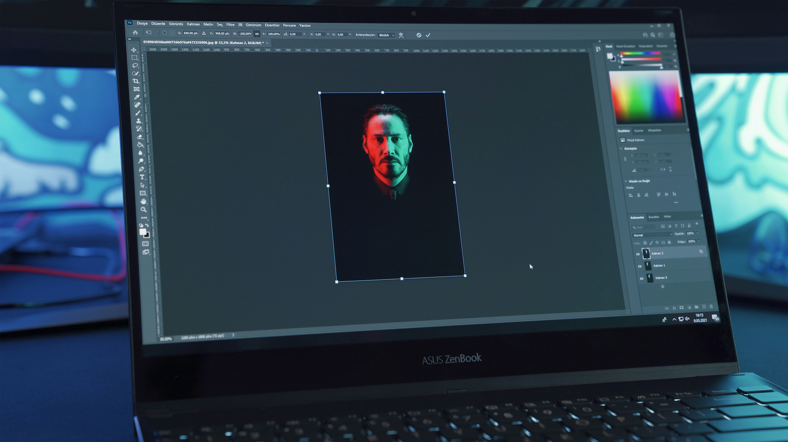

Galería Multimedia



Un ingeniero multimedia es un profesional que combina programación, diseño gráfico, producción audiovisual, animación y tecnologías digitales para crear experiencias interactivas.
Creación de páginas y aplicaciones web.
Creación visual para medios digitales.
Diseño y desarrollo interactivo.
Edición de video y contenido multimedia.
Video explicativo sobre el campo de la ingeniería multimedia. Todos los derechos del video al canal Insano.
